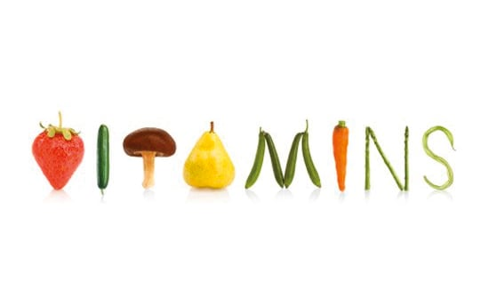

Assalamualaikum
Mori-Ori
Assalamualaikum
Mori-Ori




Moringa Tea, made from the leaves of the moringa tree, offers a wide range of remarkable health benefits. It is rich in antioxidants such as flavonoids and ascorbic acid, which help combat free radicals to protect cells from damage and premature aging. Additionally, its vitamin C content and anti-inflammatory properties strengthen the immune system, while iron and magnesium boost energy and mental health by reducing stress and improving focus. Research also shows that this tea has the potential to regulate blood sugar levels, making it beneficial for diabetes patients or those at risk. With its high fiber content, moringa tea promotes healthy digestion and prevents constipation. Moreover, it supports skin health through vitamin E and antioxidants, which help reduce inflammation and improve skin elasticity. Even more impressively, moringa tea aids liver and heart health by helping to lower cholesterol levels and protect the liver from toxins. This refreshing drink is not only invigorating but also a natural choice for enhancing overall well-being.
Moringa Tea Mori-Ori is a high-quality and pure organic tea. It is a product of a local Muslim Bumiputera enterprise. Unlike the typical moringa powder imported from Sri Lanka or India commonly used by other moringa tea producers, Mori-Ori is a local product. The moringa trees are cultivated near the forested areas of the Sungai Gabai Waterfall, Kampung Sungai Lui, Hulu Langat, Selangor Darul Ehsan. This is the secret behind why Mori-Ori is fresher and of higher quality. Mori-Ori is authentic organic tea and does not use chemical fertilizers. Experience the freshness and delight of Mori-Ori today!